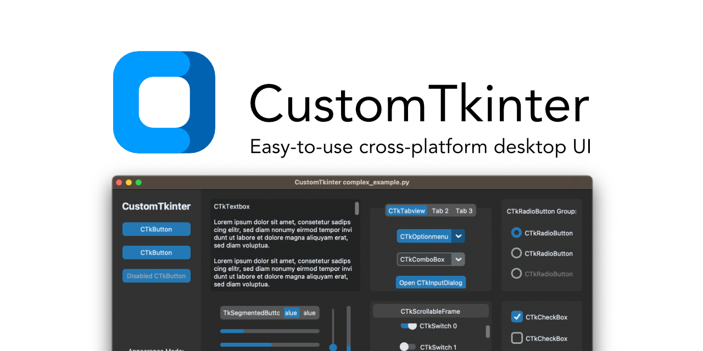

| Code | Description |
|---|---|
%d | Type of action (0 = deletion, 1 = insertion, -1 = other) |
%i | Index of cursor position where change is happening |
%P | Value of the entry after the change is done |
%s | Value of the entry before the change happens |
%S | String that is being inserted/deleted |
%v | Current validation mode ('key' 'focusin' 'focusout' 'forced') |
%V | Validation mode that triggered the callback (same as %v but evaluated inside the function) |
%w | Full widget name (ie: .!ctkentry2.!entry) |
| Mode | Description |
|---|---|
r | read |
w | write |
a | append |
x | create |
rt | write (must exist) |
file.close() if you do not use with
.py file into an app.exe (windows) and .app (macOS)--windowed tells the terminal that this is a GUI app
.appinfo.plist